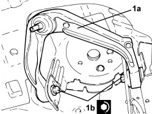

4410B68 LOWER SWINGING ARM(ONE), LH OR RH OF FRONT SUSPENSION - R R -CHECK WHEEL ALIGNMENT SEPARATELY
- Path
- Procedures > 44 SUSPENSION AND WHEELS > 4410 FRONT SUSPENSION > 4410B FRONT SUSPENSION TRACK CONTROL ARMS > 4410B68 LOWER SWINGING ARM(ONE), LH OR RH OF FRONT SUSPENSION - R R -CHECK WHEEL ALIGNMENT SEPARATELY
- Kind
- repair procedure (removal / refitting; the operation number is the code)
- Applies to
- all engines; all production periods
- Interactive page
- https://sloeber94.github.io/elrnDB/alfa/159/en/#/939010842
Applies to: all engines; all production periods
 Removing
Removing
 Refitting
Refitting- Position the vehicle on a lift.
Op. 4410A80 DAMPER LOWER FORK - R R
1. Undo the bolts (1a) and remove the front suspension track control arm (1b).

Applies to: all engines; all production periods
Refitting
Removing1. Refit the front suspension track control arm (1a) and secure by tightening the new bolts (1b) to the specified torque.

Applies to: all engines; all production periods
Op. 4410A80 DAMPER LOWER FORK - R R
- Remove the vehicle from the lift.
Topics linked from this page (2)
- 4410A12 FRONT SUSPENSION DAMPER (ONE), LH OR RH - FOR MCPHERSON STRUT SYSTEM - INCLUDES DISMANTLING/REASSEMBLY OF ASSEMBLY AT BENCH - R.R
- 4410A80 DAMPER LOWER FORK - R R